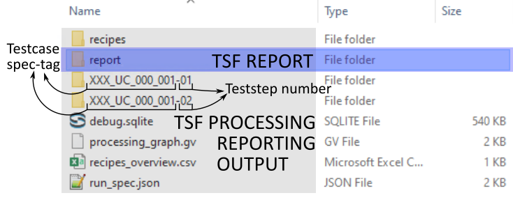

TSF Report#
Test Scripting Foundation (TSF) currently outputs HTML reports in general but additional outputs can be customized or added by the users in order to statisfy their requirements since all results are stored in the Oracle database. TSF does not support storage of images, graphics or signal data to the database in the current setup.
Note
We are using a local debug report as a base for explaining the reporting structure. Production reports might vary based on user’s requirements and changes.
Output Folder structure#
The TSF output folder contains outputs from two processes which we would from now on address as:
TSF Processing output
TSF Reporting output
TSF Processing output#
The processing output contains:
- recipes folder contains JSON files which contain a mapping of all the relevant information to process a recording.
Therefore, recipes are created on a per recording basis i.e. every recording considered shall have a recipe associated with it. The recipe contains information such as recording path, input bsig path, testcases to be executed, teststeps to be executed, and more.
- report folder contains the HTML report (and its dependencies such as videos, pictures, etc.) which can be delivered
to customers or users of the report. This folder contains sub-folders which are discussed in detail in the following sections. (some parts of the report are created during the processing itself)
- testcase hyphenated teststep folders (testcase_spec_tag-teststep_number) are created for each testcase and each test
step and contain JSON files that hold additional data which are saved during the processing step, to be used during reporting step (such as series data for signal plots, scatter plots, histograms, etc.)
- recipes_overview.csv This CSV file provides mapping and overview of recipes (in the recipe folder) with respect to
recording meas id, recording file path, and testcases.
- debug.sqlite (only for debug local reports) is created for local debug reports. It is an instance of the Oracle DB
and based on this all the processing and reporting is executed.
- run_spec.json based on the input run_spec.json file this generalized run_spec file is created. This file has all the
required information for processing a TSF report.
processing_graph.gv is a graphical representation of all the internal processes which take place. This could be used for providing a brief overview as well as debugging and target problem points.
TSF Reporting output#
The reporting folder contains:
fragments folder contains fragments or HTML code for the pages of the report.
html folder contains the main HTML report which is discussed further in detail.
video folder contains video files for the videos for events in the report (if events were created and video files were available at recording locations).
html report#
The html folder contains following folder structure:
birdeye folder contains all the birdeyes which were requested and generated.
events contains all the event.html pages.
meta folder contains collection_overview.html and itinerary.html files.
ref folder contains three sub-folders i.e. FRONT, LEFT and RIGHT which contain reference camera pictures of an event when requested.
static folder contains all static elements of the report.
statistics folder contains all the statistics html pages.
testcases folder contains all the testcase html pages.
teststeps folder contains all the teststep html pages.
index.html file is the homepage of the HTML report where you would be welcomed to the Overview Page. A brief overview of this page is discussed here.
Note
The emphasised folders are not created in general. These are only created when these elements are requested to be a part of the report.